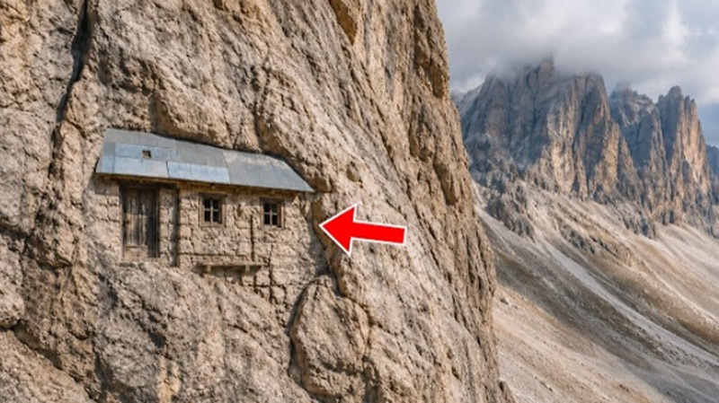
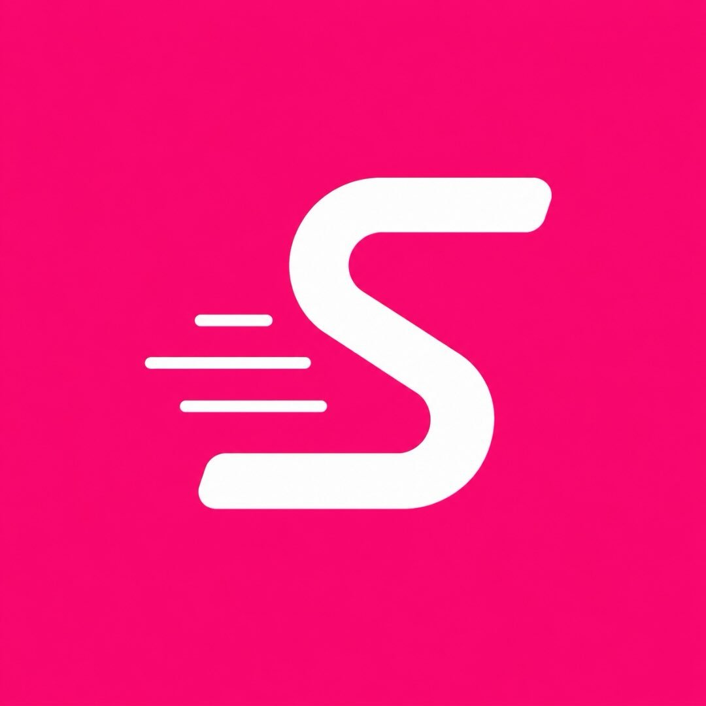
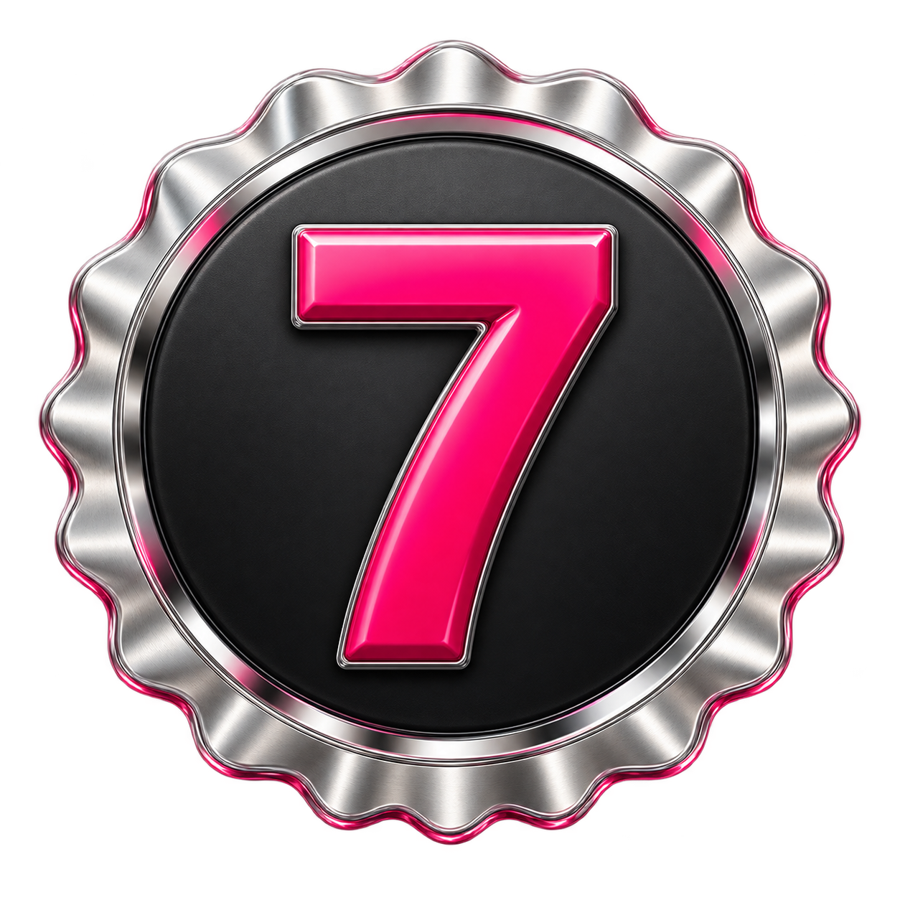

ANÚNCIOTipgalore

swipe flow®Entrar no flowAcesse na íntegra anúncios, páginas e VSLs do Brasil e do mundo.
Estude a copy, entenda a estratégia e encontre o ponto de partida da sua próxima campanha.
Campanhas por inteiro.Do primeiro gancho à oferta.
Conhecimento sem fronteiras.Referências traduzidas para o português.
Um olhar além da copy.Análises para entender cada escolha.
Uma das melhores formas de aprender copy é estudar, todos os dias, campanhas que já passaram pelo mercado.
O gancho que faz parar. A história que sustenta a atenção. O argumento que apresenta uma nova possibilidade. A oferta que transforma interesse em decisão.
Quando você observa essas escolhas de perto, começa a reconhecer padrões. E ganha mais recursos para escrever com intenção.
A Swipe Flow reúne as referências e o contexto. Você traz o olhar, o seu público e a próxima ideia.
Conheça o que está dentro do acervo ↓Cartas de vendas, anúncios, artigos, páginas e vídeos. Referências organizadas para você encontrar caminhos nos mais variados nichos, estudar grandes campanhas e voltar ao trabalho com novas ideias.
Encontre. Salve. Volte quando precisar.
Suas melhores referências, reunidas em uma biblioteca pessoal.
Saia das referências de sempre. Explore campanhas brasileiras e internacionais, em diferentes nichos e formatos, com conteúdos traduzidos para o português.
Mais caminhos para começar. Mais repertório para escolher.
Diferentes abordagens.
Um novo jeito de olhar.
Uma boa campanha tem decisões em cada trecho. As análises ajudam você a identificar o papel do gancho, da história, do argumento e da chamada para ação.
Entenda a lógica. Escreva com a sua voz.
Cada escolha
tem uma intenção.
O que faz alguém parar?
Uma abertura que desperta curiosidade.O que sustenta a promessa?
Contexto, benefícios e razões para acreditar.Qual é o próximo passo?
Uma chamada clara para continuar.Salve conteúdos com o Spy, organize sua biblioteca e desenvolva ideias com o The Derick. No Ultra, conecte o acervo ao Claude ou ChatGPT via MCP.
Explore novos ângulos para esta oferta a partir das minhas referências.
✳Um bom swipe file acompanha o seu trabalho: na pesquisa, na escrita, na revisão e na próxima rodada de testes.
Encontre referências em diferentes nichos sem reconstruir sua pesquisa a cada briefing. Coloque possibilidades na mesa mais cedo.
Tenha acesso a campanhas completas e análises que ajudam a conectar a teoria às escolhas feitas em cada peça.
Descubra abordagens, estude estruturas e amplie sua visão do mercado. Transforme o hábito de ler copy em parte do seu processo.
No Ultra, aprofunde o aprendizado com o DR Club e amplie suas conexões no grupo de networking pelo WhatsApp.
Do primeiro swipe a uma rotina completa de pesquisa e criação.
Escolha o plano que acompanha o seu momento.
Para organizar referências e começar sua biblioteca de trabalho.
Para quem pesquisa com frequência e quer criar com o The Derick.
Para conectar o acervo, aprofundar o aprendizado e ampliar sua rotina.
Continue na plataforma Swipe Flow para concluir seu cadastro e assinatura.
Acesse a plataforma e conheça o acervo no seu ritmo. Se não fizer sentido para você, solicite o reembolso em até 7 dias pelos canais de atendimento da Swipe Flow.
Tempo para conhecer. Liberdade para decidir.
É uma coleção de referências de cartas de vendas, vídeos, anúncios e outros conteúdos. Você usa esse repertório para estudar estruturas, descobrir abordagens e desenvolver suas próprias campanhas.
Um acervo de anúncios, ofertas, páginas, presells, cartas e vídeos, com referências de diferentes mercados. Você também encontra traduções e análises para estudar as estratégias por trás das campanhas.
Construir e organizar um acervo exige tempo. A Swipe Flow reúne referências e ferramentas em um só lugar, para que você dedique mais energia à pesquisa que importa e ao desenvolvimento das suas ideias.
Você pode usar o acervo em diferentes momentos da carreira. Quem está começando encontra exemplos para estudar. Quem já cria campanhas pode ampliar suas referências e explorar novos ângulos.
O Basic é o ponto de partida para o feed, biblioteca e Spy. O Pro amplia os acessos e inclui o The Derick. O Ultra acrescenta Spy ilimitado, DR Club, MCP, Quebra Cloaker, networking e créditos extras. Compare os recursos acima para escolher.
Você pode conhecer a plataforma e solicitar o reembolso em até 7 dias, caso decida não continuar. A solicitação deve ser feita pelos canais de atendimento da Swipe Flow.
Escolha um dos planos nesta página e continue na plataforma Swipe Flow para concluir o cadastro e a assinatura. Depois, entre na sua conta para explorar o acervo.
Os materiais servem como referências de estudo. Observe os princípios, adapte as ideias ao seu público e desenvolva sua própria execução, respeitando os direitos de quem criou o conteúdo original.
Grandes campanhas para estudar.
Novas possibilidades para criar.